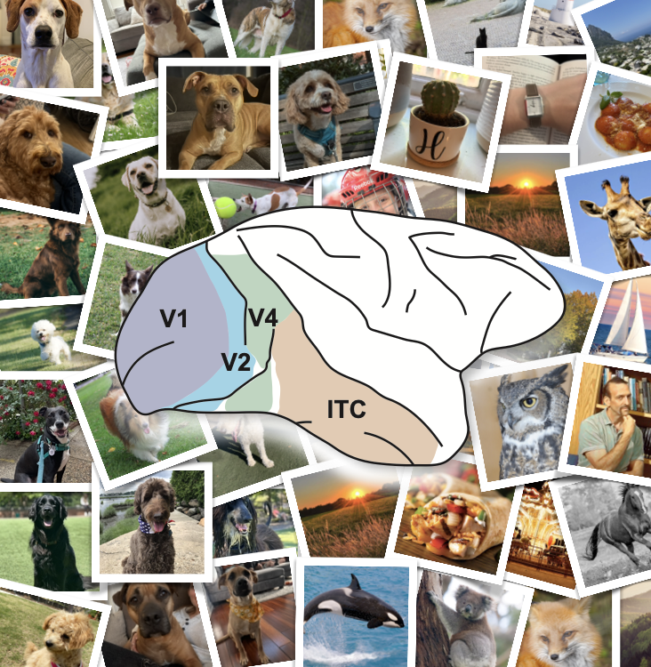
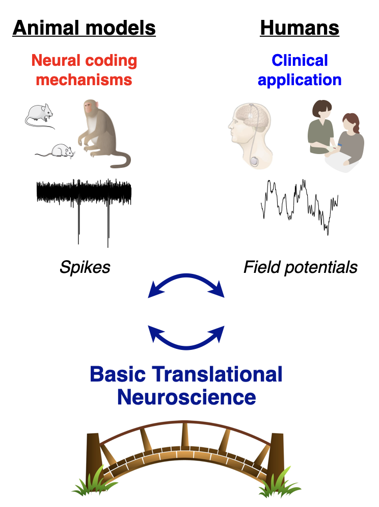
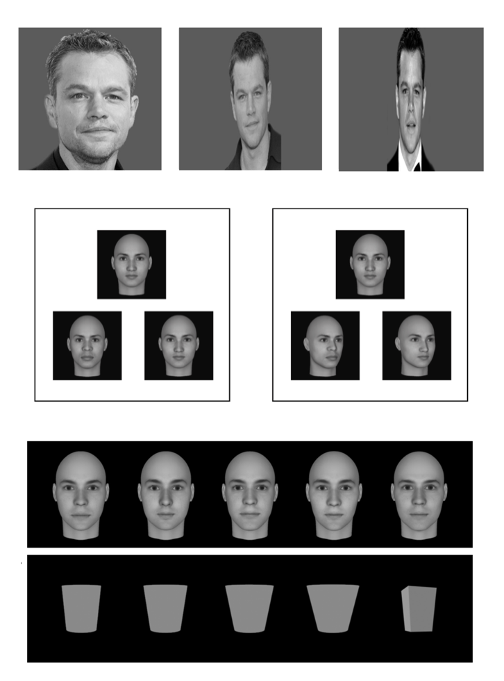

Every day we effortlessly remember a lot of what we see with an incredible amount of detail. Our capacity to access and utilize these memories is essential to our ability to navigate, maintain relationships, and interact with the world. With healthy aging and memory disorders our ability to form and utilize visual memories changes. How do our brains accomplish this incredible feat? And what brain changes account for changing visual memory abilities in healthy aging and memory disorders?
My research answers these questions by directly examining brain activity in the visual and memory systems as memories are formed and utilized to make decisions. In this way, we can learn how the brain signals telling you what you're looking at get turned into a memory that tells you whether you've seen it before or not to guide future behavior.
Related Projects:
I plan to continue addressing these questions in my postdoc work so stay tuned for more.


There are two approaches that are essential to understanding brain function in health and disease (including visual memory). The first is to record neural activity in animals where we are able to capture the activity of thousands of individual neurons across a long amount of time. The second is taking advantage of limited opportunities to record more aggregate neural activity directly from the human brain.
These approaches will play essential and complementary roles in moving neuroscience forward. Animal studies provide the high resolution data needed to gain a strong foundational understanding of brain activity, while human brain recordings test these ideas directly in human brains and are the basis of the growing field of neuromodulatory therapies that will turn these insights into real-world treatments. However, differences in how experiments are conducted make translating insights from one approach to the other challenging.
As such, we need to identify and resolve what information is necessary to overcome these challenges to facilitate cross-talk between human and animal neuroscience. The process of establishing these foundational building blocks is what I call Basic Translational Neuroscience and I think it is an essential part of making neuroscience research more impactful.Related Projects:
I plan to continue addressing these questions in my postdoc work so stay tuned for more.
For most of us, a familiar face can be quickly and effortlessly recognized even after just a single exposure and in an entirely new context. Perhaps that's not surprising when we consider how important face recognition is for building and maintaining relationships. My undergraduate research asked what we can learn about the boundaries of this ability when we push it to the limits.
Related Projects:
My undergraduate research on face recognition was my first experience with scientific research and it's where I learned to appreciate how powerful human behavior can be as a tool for understanding brain function. Even though the scientific questions I'm asking have evolved, human behavior is a research tool I will always continue to use.
